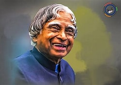

The Missile Man of India | Scientist | Visionary | People's President

Dr. A.P.J. Abdul Kalam was born on 15 October 1931 in Rameswaram, Tamil Nadu. He was an aerospace scientist who worked with ISRO and DRDO. He played a major role in India's missile and space programs and became the 11th President of India. He inspired millions of students through his speeches, books, and humble personality. He passed away on 27 July 2015 while delivering a lecture at IIM Shillong.
Dr. A.P.J. Abdul Kalam came from a simple and humble family with limited financial resources. From a young age, he worked hard to support his family while continuing his education. He was always interested in science and technology and dreamed of serving the nation. He completed his studies in Aerospace Engineering at the Madras Institute of Technology. His dedication, discipline, and determination helped him achieve great success. He believed that education was the key to a better future. His inspiring journey proves that hard work can make any dream come true.
Dr. Kalam started his career at the Defence Research and Development Organisation (DRDO). Later, he joined the Indian Space Research Organisation (ISRO), where he played an important role in India's space programme. He led the successful launch of the SLV-III rocket, which placed the Rohini satellite into orbit. He also contributed to the development of Agni and Prithvi missiles. Because of his outstanding work, he became known as the "Missile Man of India." His scientific achievements strengthened India's defence capabilities. His contributions made the country proud and inspired many future scientists.
In 2002, Dr. A.P.J. Abdul Kalam became the 11th President of India. He served the country with honesty, simplicity, and dedication until 2007. People lovingly called him the "People's President" because he was kind and approachable. He spent a lot of time interacting with students and motivating young minds. He believed that today's youth could build a stronger and more developed India. He encouraged everyone to dream big and work hard to achieve success. His speeches inspired millions of people across the country. Even after his presidency, he continued teaching and sharing his knowledge.
Dr. Kalam received many prestigious awards, including the Bharat Ratna, India's highest civilian award. He also wrote inspiring books such as Wings of Fire, Ignited Minds, and India 2020. His books continue to motivate students and professionals around the world. On 27 July 2015, he passed away while delivering a lecture at IIM Shillong. He dedicated his entire life to education, science, and the development of the nation. His values of honesty, humility, and hard work continue to inspire millions of people. Dr. A.P.J. Abdul Kalam will always be remembered as a great scientist, visionary leader, and role model for future generations.
"Dream is not that which you see while sleeping; it is something that does not let you sleep."
-Dr.A.P.J.Abdul Kalam